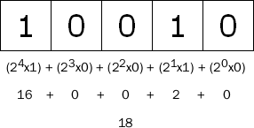

js 位运算
前言
本人平时学习及收集内容，欢迎参入一起讨论。
内容
一、二进制表示整数
ECMAScript 整数有两种类型，即有符号整数（允许用整数和负数）和无符号整数（只允许用正数）.有 ECMcript 中，所有整数字面量默认都是有符号整数。
有符号整数使用 31 位表示整数的数值，用第 32 位表示整数的符号，0 表示正数，1 表示负数。数值范围从 -2147483648 到 2147483647。
正数是以真二进制形式存储的，前 31 位中的每一位都表示 2 的幂，从第 1 位（位 0）开始，表示 20，第 2 位（位 1）表示 21。没用到的位用 0 填充，即忽略不计。例如，下图展示的是数 18 的表示法。

18 的二进制版本只用了前 5 位，它们是这个数字的有效位。把数字转换成二进制字符串，就能看到有效位：
var iNum = 18;
console.log(iNum.toString(2)); // 输出'10010'
2
这段代码只输出“10010”，而不是 18 的 32 位表示。其他的数位并不重要，因为仅使用前 5 位即可确定这个十进制数值。如下图所示：

负数也存储为二进制代码，不过采用的形式是二进制补码。计算数字二进制补码的步骤有三步：
- 确定该数字的非负版本的二进制表示（例如，要计算 -18 的二进制补码，首先要确定 18 的二进制表示）
- 求得二进制反码，即要把 0 替换为 1，把 1 替换为 0
- 在二进制反码上加 1
要确定 -18 的二进制表示，首先必须得到 18 的二进制表示，如下所示：
0000 0000 0000 0000 0000 0000 0001 0010
接下来，计算二进制反码，如下所示：
1111 1111 1111 1111 1111 1111 1110 1101
最后，在二进制反码上加 1，如下所示：
1111 1111 1111 1111 1111 1111 1110 1101
1
---------------------------------------
1111 1111 1111 1111 1111 1111 1110 1110
2
3
4
因此，-18 的二进制表示即 1111 1111 1111 1111 1111 1111 1110 1110。
有趣的是，把负整数转换成二进制字符串后，ECMAScript 并不以二进制补码的形式显示，而是用数字绝对值的标准二进制代码前面加负号的形式输出。例如：
var iNum = -18;
alert(iNum.toString(2)); //输出 "-10010"
2
3
所有的按位操作符的操作数都会被转成补码形式的有符号 32 位整数。
总结：
- 二进制的最高位是符号位：0 表示正数，1 表示负数
- 正数的原码、反码、补码都一样；
- 负数的反码 = 它的原码符号位不变，其他位取反(0->1;1->0);
- 负数的补码 = 它的反码+1;
- 0 的反码、补码都是 0；
- 在计算机运算的时候，都是以补码的方式来运算的；
- 对补码再求一次补码则得到原码；
二、js 的按位操作符
2.1 ~（按位非）
对每一个比特位执行非（NOT）操作。NOT a 结果为 a 的反转（即反码）。
位运算 NOT 是三步的处理过程：
- 把运算数转换成 32 位数字
- 把二进制数转换成它的二进制反码
- 把二进制数转换成浮点数
var iNum1 = 25; // 25 等于00000000000000000000000000011001
var iNum2 = ~iNum1; //转换为 11111111111111111111111111100110
console.log(iNum2); // 输出“-26”
2
3
得出结论，对任一数值 x 进行按位非操作的结果为-(x+1)。
2.2 &（按位与）
对每对比特位执行与（AND）操作。只有 a 和 b 都是 1 时，a AND b 才是 1.与操作的真值表如下：
| a | b | a AND b |
|---|---|---|
| 0 | 0 | 0 |
| 0 | 1 | 0 |
| 1 | 0 | 0 |
| 1 | 1 | 1 |
要对数字 25 和 3 进行 AND 运算，代码如下所示：
var iResult = 25 & 3; // 输出1
分析如下：
25 = 0000 0000 0000 0000 0000 0000 0001 1001
3 = 0000 0000 0000 0000 0000 0000 0000 0011
--------------------------------------------
AND = 0000 0000 0000 0000 0000 0000 0000 0001
2
3
4
5
可以看出，在 25 和 3 中，只有一个数位（位 0）存放的都是 1，因此，其他数位生成的都是 0，所以结果为 1。
**结论：**将任一值 x 与 0 执行按位与操作，其结果都是为 0.将任一数值 x 与-1 执行按位与操作，其结果都为 x。
2.3 |（按位或）
对每一对比特位执行或（OR）操作。如果 a 或 b 为 1，则aORb结果为 1。或操作的真值表：
| a | b | a AND b |
|---|---|---|
| 0 | 0 | 0 |
| 0 | 1 | 1 |
| 1 | 0 | 1 |
| 1 | 1 | 1 |
对 25 和 3 进行 OR 运算，代码如下：
var iResult = 25 | 3; // 输出“27”
分析如下：
25 = 0000 0000 0000 0000 0000 0000 0001 1001
3 = 0000 0000 0000 0000 0000 0000 0000 0011
--------------------------------------------
OR = 0000 0000 0000 0000 0000 0000 0001 1011
2
3
4
5
**结论：**将任一数值 x 与 0 进行按或操作，其结果都是 x。将任一数值 x 与-1 进行按位或操作，其结果都是为-1。
2.4 ^（按位异或）
对每一对比特位执行异或（XOR）操作。当 a 和 b 不相同时，aXORb的结果为1。异或操作真值表：
| a | b | a AND b |
|---|---|---|
| 0 | 0 | 0 |
| 0 | 1 | 1 |
| 1 | 0 | 1 |
| 1 | 1 | 0 |
对 25 和 3 进行 XOR 运算，代码如下：
var iResult = 25 ^ 3; // 26
分析如下：
25 = 0000 0000 0000 0000 0000 0000 0001 1001
3 = 0000 0000 0000 0000 0000 0000 0000 0011
---------------------------------------------
XOR = 0000 0000 0000 0000 0000 0000 0001 1010
2
3
4
**结论：**将任一数值 x 与 0 进行异或操作，其结果为 x。将任一数值 x 与-1 进行异或操作，其结果为~x。
2.5 <<（左移）
该操作符会将第一个操作向左移动指定的位数。向左被移出的位被丢弃，右侧用 0 补充。
对9<<2进行左移，代码如下：
9<<2 // 结果 36
9 (base 10): 00000000000000000000000000001001 (base 2)
9 << 2 (base 10): 00000000000000000000000000100100 (base 2) = 36 (base 10)
2
3
4
5
6
在数字x上左移y比特得到x*2y
2.6 >>（右移）
该操作符会将第一个操作数向右移动指定的位数。向右被移出的位被丢弃，拷贝最左侧的位以填充左侧。由于新的最左侧的位总是和以前相同，符号位没有被改变。所以被称作“符号传播”。
9 (base 10): 00000000000000000000000000001001 (base 2)
--------------------------------
9 >> 2 (base 10): 00000000000000000000000000000010 (base 2) = 2 (base 10)
------------------------------------------------------------------
-9 (base 10): 11111111111111111111111111110111 (base 2)
--------------------------------
-9 >> 2 (base 10): 11111111111111111111111111111101 (base 2) = -3 (base 10)
2
3
4
5
6
7
8
9
2.7 >>>（无符号右移）
该操作符会将第一个操作数向右移动指定的位数。向右被移出的位被丢弃，左侧用 0 填充。因为符号位变成了 0，所以结果总是非负的。
对于非负数，有符号右移和无符号右移总是返回相同的结果。例如 9 >>> 2 和 9 >> 2 一样返回 2：
9 (base 10): 00000000000000000000000000001001 (base 2)
--------------------------------
9 >>> 2 (base 10): 00000000000000000000000000000010 (base 2) = 2 (base 10)
2
3
但是对于负数却不尽相同。 -9 >>> 2 产生 1073741821 这和 -9 >> 2 不同：
-9 (base 10): 11111111111111111111111111110111 (base 2)
--------------------------------
-9 >>> 2 (base 10): 00111111111111111111111111111101 (base 2) = 1073741821 (base 10)
2
3
三、位运算实际应用
3.1 找到索引
var str = 'rawr';
var searchFor = 'a';
// 这是 if (-1*str.indexOf('a') <= 0) 条件判断的另一种方法
if (~str.indexOf(searchFor)) {
// searchFor 包含在字符串中
} else {
// searchFor 不包含在字符串中
}
2
3
4
5
6
7
8
9
3.2 奇数或偶数
function isOdd (int) {
return (int & 1) === 1;
}
function isEven (int) {
return (int & 1) === 0;
}
console.log(isOdd(34)); // false
console.log(isOdd(-63)); // true
console.log(isEven(-12)); // true
console.log(isEven(199)); // false
2
3
4
5
6
7
8
9
10
11
12
13
参考资料
联系作者
平凡世界，贵在坚持。